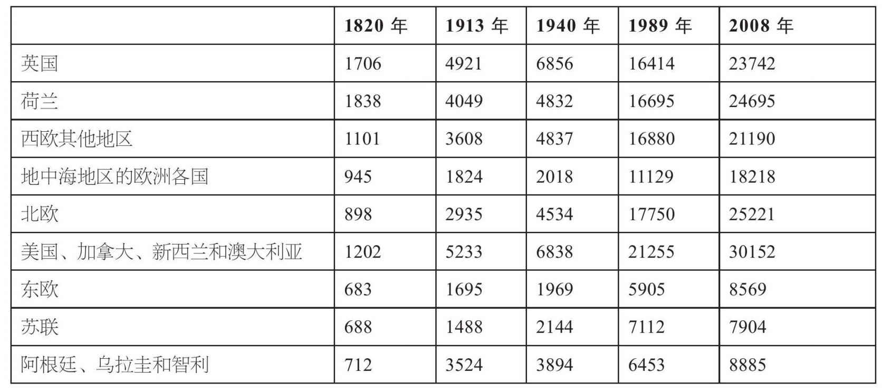
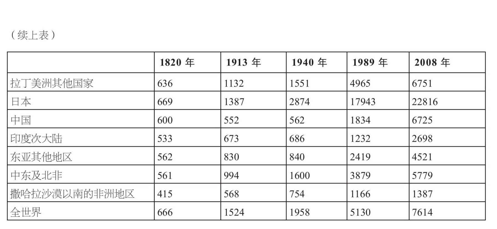
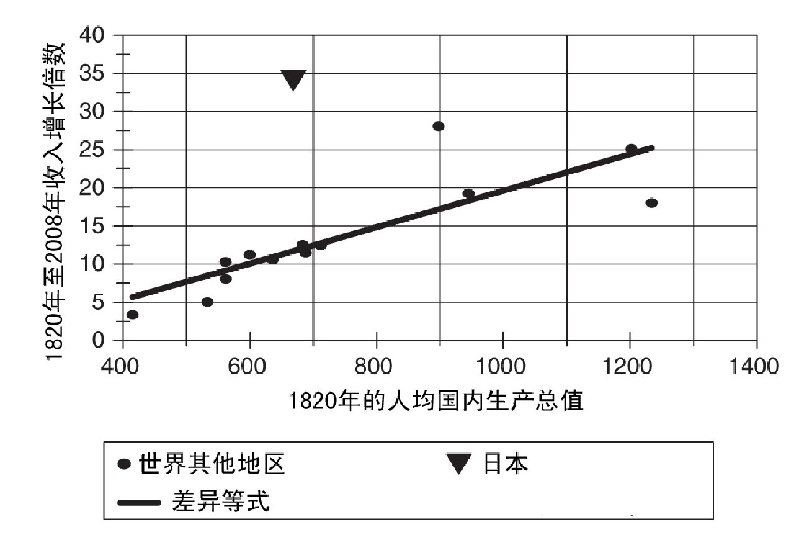
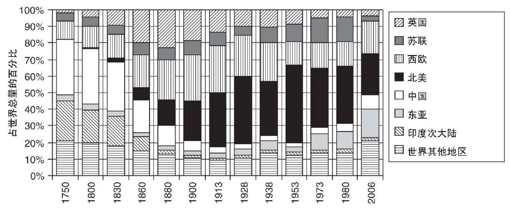
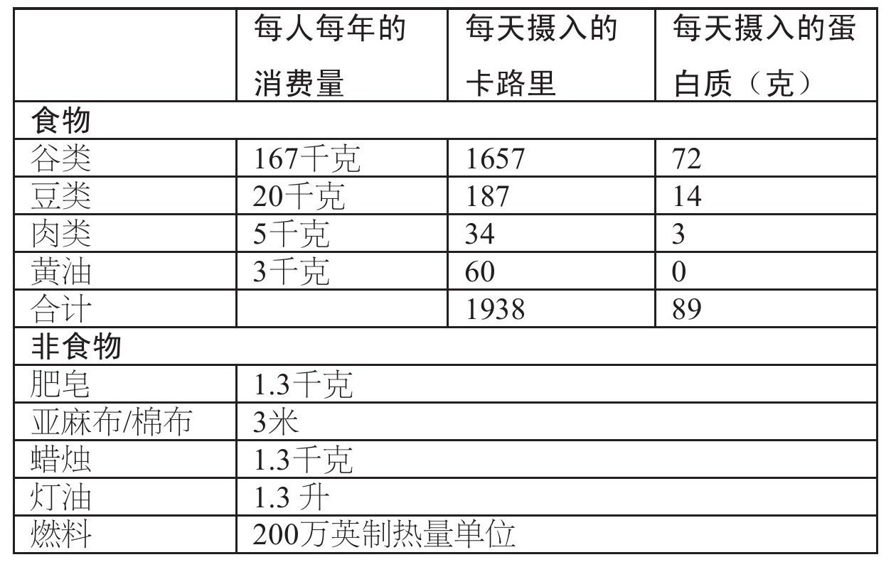
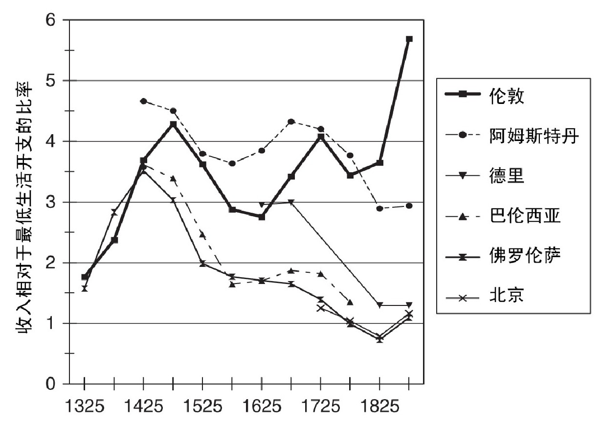
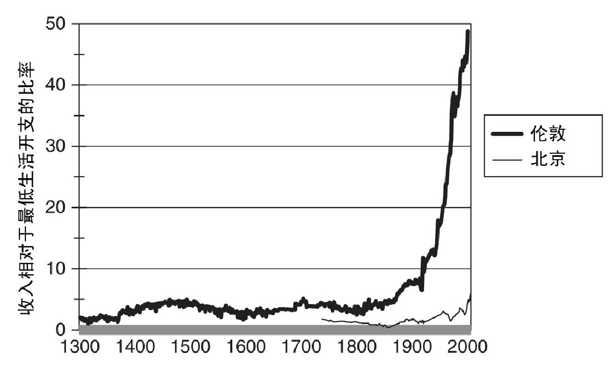

经济史是社会科学的核心。它的研究范围可以借用亚当·斯密的代表作来表述，那就是《国民财富的性质和原因的研究》。经济学家采取一种不考虑时间因素的经济发展理论来探究“原因”，而经济史学家则在历史变迁的动态发展过程中来寻找答案。近年来，经济史研究格外引人关注，因为其中最根本的问题（“为什么一些国家富裕，而另一些国家却陷入贫困？”）已经把视野拓展到全球范围。这和五十年前完全不同，当时的核心问题是：“为什么工业革命发生在英格兰，而不是法国？”近年来关于中国、印度和中东地区的研究强调世界各大文明内在的发展动力，因此我们如今要问的是：为什么过去的经济增长发生在欧洲，而不是亚洲或非洲？
关于远古时期的收入状况，我们所掌握的数据并不充分，不过在1500年左右，似乎各国间的贫富差距并不大。在达伽马到达印度和哥伦布发现美洲之后，如今的贫富分化格局才基本开始成形。
我们可以把过去的五百年分为三个阶段。第一个阶段从1500年到大约1800年，可称为重商主义时期 。这一阶段始于哥伦布和达伽马的航海探险（正是这些航行最终促成了一体化的全球经济），终于工业革命。在此三百年间，美洲开始被殖民并向欧洲输出白银、糖和烟草；非洲人被运往美洲充当奴隶，生产上述产品；亚洲则将香料、纺织品和瓷器运往欧洲。主要欧洲国家不断获取新的殖民地，并采用关税和战争手段阻挠其他国家与殖民地开展贸易，企图以此来增加本国的贸易收入。以牺牲殖民地的发展为代价，欧洲制造业取得了进步，但当时经济发展本身并不是各国的兴趣所在。
第二个阶段出现在19世纪，可称为赶超时期 。在这一阶段，情况发生了变化。当拿破仑于1815年兵败滑铁卢时，英国已经在工业领域内确立了领先优势，将其他国家都甩在身后。西欧各国和美国将经济发展作为首要任务，试图采取一系列政策来发展经济。这些政策包括四个部分：（1）消除内部关税，加强交通基础设施建设，从而建立统一的全国性市场；（2）建立外部关税，保护本国工业，应对来自英国的竞争；（3）成立银行，稳定货币并为工业投资提供资金；（4）建立大众教育体系，提升工人的能力。这些政策在西欧和北美取得了成功，这些地区内的各个国家和英国一起构成了如今的富国俱乐部。一些拉美国家没有完全采取这些政策，未能取得巨大成功。来自英国的竞争使得大多数亚洲国家没能走上工业化道路。自从英国的奴隶贸易于1807年停止后，非洲改为对外输出棕榈油、可可粉和各种矿物。
到了20世纪，曾经在西欧（尤其是德国）和美国取得成功的各项政策在不发达国家实行后，并没有取得显著效果。大多数技术都由富裕国家发明，由于这些国家的劳动力价格日渐昂贵，所以它们需要发明新的技术，通过投入更多资本来提高生产率。对于工资水平较低的国家来说，采用新技术常常不够划算，但要想追赶西方国家，它们需要这些技术。大多数国家一定程度上都采用了现代技术，但它们的发展速度还不足以赶超富裕国家。也有一些国家在20世纪成功缩小了与西方国家之间的差距，它们采取的是大推进式的发展模式，通过计划手段和投资协调来取得快速发展。
在研究一些国家如何变得富裕之前，我们必须先确定它们何时变得富裕。在1500年至1800年间，如今的富裕国家确立了微弱的领先优势，我们可以用人均国内生产总值来衡量这一优势（参见表1）。1820年，欧洲已经成为最富裕的大洲，人均国内生产总值是世界其他地区的两倍。当时最富裕的国家是荷兰，人均收入（国内生产总值）为1，838美元。17世纪，低地国家开始繁荣，其他地区经济发展的主要目标就是赶超荷兰。当时英国正在追赶的道路上。工业革命已经经历了两代人的发展，英国的富裕程度仅次于荷兰，1820年人均收入达到1，706美元。西欧和英国的附属地区（加拿大、澳大利亚、新西兰和美国）的人均收入为1，100美元至1，200美元。世界其他地区远远落后，人均收入为500美元至700美元。非洲是最贫困的大陆，人均收入只有415美元。
从1820年到现在，除个别国家外，收入差距在扩大。1820年最富裕的几个国家随后发展最快。如今最富裕的国家人均收入为25，000美元至30，000美元，亚洲和拉丁美洲的大多数国家人均收入为5，000美元至10，000美元，而撒哈拉沙漠以南的非洲地区人均收入只有1，387美元。图1展示了地区间的差异，靠近右侧的地区在1820年具备较高的人均收入水平，正是这些地区呈现出了最大的收入增长幅度。与之相比，靠近左侧的地区初始收入水平较低，同时收入增长幅度也较小。欧洲和英国的附属地区实现了17倍至25倍的收入增长。东欧和亚洲大多数国家的初始收入低于欧洲和英国的附属地区，它们的收入增长在10倍左右。南亚、中东地区和大部分撒哈拉沙漠以南的非洲地区更为不幸，它们在1820年时就更为贫困，在那之后它们也只有3倍至6倍的收入增长。它们与西方国家的差距拉得更大。“差异等式”总结了这一模式。
表1 1820年至2008年世界各地人均国内生产总值


国内生产总值测量的是一个经济体生产（提供）的产品和服务总量，以及它获得的总收入。在表1中，各个地区不同时期的国内生产总值已经过换算，统一用1990年的美元价格作为基本单位，以便对不同时期和不同地区的产量（真实收入水平）进行比较。
注：从1940年起，英国的数据包括北爱尔兰地区。

图1 巨大的差异
个别地区的发展并不符合收入差异模式。其中最重要的是东亚地区，因为只有这一地区扭转了原有趋势，改善了自身地位。日本在20世纪取得的成就最大，因为它在1820年时还是毫无争议的贫困国家，但它随后消除了与西方国家之间的收入差距。同样取得巨大进步的还有韩国和中国台湾地区。苏联是另一个例外，不过它并没有完全成功。现在中国或许正在创造新的奇迹。
工业化和去工业化是造成世界各地收入差异的主要原因（参见图2）。1750年，世界上的大多数产品由中国（占全世界总量的33%）和印度次大陆（25%）制造。亚洲的人均产量低于更为富裕的西欧国家的人均产量，但差距很小。到1913年时，世界格局发生了翻天覆地的变化。中国和印度次大陆占世界制造业的比重分别下降到4%和1%。英国、美国和欧洲占到世界总产量的3/4。英国的人均产量是中国的38倍，是印度的58倍。这不仅是因为英国的产量迅猛增长，中国和印度次大陆制造业的大幅衰落也是原因之一，因为西方各国的机械化生产将这两个国家的纺织业和冶金业驱逐出了市场。在19世纪，亚洲各国从世界制造业中心变成了只会生产并出口农产品的典型的不发达国家。

图2 世界产量的分布
图2展示了世界历史进程中的若干重大转折点。从1750年至1880年，英国工业革命是主要事件。在这一阶段，英国占世界制造业的份额从2%上升到23%，正是来自英国的竞争摧毁了亚洲的传统制造业。从1880年至第二次世界大战这一阶段，标志性事件是美国和欧洲大陆（尤其是德国）的工业化。到1938年，它们占世界制造业的份额分别提高到33%和24%。英国被这些竞争者抢占了部分市场，它所占的份额下降到13%。从二战结束后到20世纪80年代，苏联占世界制造业的份额迅速上升，但随着苏联解体后各成员国陷入经济衰退，这一地区所占的比重又大幅下降。东亚奇迹见证了日本、中国台湾地区和韩国的崛起，它们占世界制造业的份额提高到17%。从20世纪80年代起，中国大陆地区也一直在进行工业化。2006年，中国大陆地区制造的产品占世界总量的9%。如果中国大陆地区追上西方国家的前进步伐，那么世界格局将重新回到原点。
国内生产总值并不足以充分衡量民众的福祉，还有许多因素有待考虑，比如健康、预期寿命和受教育程度。此外，缺乏数据时常给国内生产总值的计算带来困难。不管怎么说，用国内生产总值来衡量福祉可能会产生误导，因为它只计算了平均收入，而没有区分富人和穷人。计算“真实工资”（即人们的收入所能获得的生活水平）有助于有效解决上述问题。真实工资让我们得以了解普通人的生活水平，并且有助于解释现代工业的起源和发展，因为在劳动力最昂贵的地方，就会产生最大的动力来增加每个工人平均使用的机械数量。
我关注的是体力劳动者。要衡量他们的生活水平，就必须将他们的工资与消费品价格进行比较，并且必须对这些消费品价格进行加权平均，以计算消费价格指数。我所采用的指数是一个人维持“最低生活开支”所花费的成本（即维持生存所需的最少费用）。此时饮食有一半是素食。煮过的谷粒或者没有发酵的面包提供了生存所需的大部分卡路里，豆科植物成为富含蛋白质的有益补充，黄油或植物油提供了一点脂肪。在1500年的时候，世界各地的典型食物就是这些。一个名叫弗朗西斯科·佩尔萨特的荷兰商人在17世纪早期到过印度。他注意到，德里附近的人们“没有其他食物，只吃一点青豆和米饭做成的杂烩饭……他们在晚上才混着黄油吃杂烩饭，白天只嚼一点干豆子或者其他谷粒”。这些苦力“几乎没尝过肉的味道”。事实上，大多数肉类对他们来说是禁忌。
表2显示了一名成年男性在“最低生活开支”状态下的消费模式。他的饮食基于世界各地最便宜的谷物——在欧洲西北部是燕麦，在墨西哥是玉米，在印度北部是小米，在中国沿海地区是水稻等等。这些谷物的数量是选定的，这样的一份饮食每天产生的热量是1，940卡路里。食物之外的开支只限于简单的衣物、少量燃料和蜡烛。大部分开支都用于食物，更确切地说，用于饮食结构中最核心的部分：碳水化合物。
关于生活水平，我们要关注的基本问题是：一名全职体力劳动者能否挣到足够多的钱，来维持一家人的最低生活开支。图3显示了全职收入相比全家人最低生活开支的比率。如今，欧洲各地的生活水平差不多。上一次出现这样的情况还要追溯到公元1世纪。当时的生活水平也很高：体力劳动者的收入大约是家庭最低生活开支的4倍。然而，18世纪欧洲地区开始出现巨大的差异。
表2 维持最低生活开支的物品组合

注：本表基于西欧和北欧地区燕麦粥的数量和营养价值。世界其他地区的最低生活开支使用当地最便宜的谷类食物进行计算，因此确切的数量有所不同。

图3 体力劳动者的收入和最低生活开支的比率
欧洲大陆的生活水平下降，体力劳动者的收入只能购买表2中的物品（或同类产品）。在中世纪，佛罗伦萨的工人能吃上面包，但到了18世纪，他们只能吃玉米糊，这是刚从美洲引入的新物种。
相比之下，阿姆斯特丹和伦敦的体力劳动者的收入依然是最低生活开支的4倍。不过，伦敦的工人在1750年并不是把表2中的燕麦粥吃上4份，而是改善自己的饮食，吃上了白面包、牛肉和啤酒。只有在邻近凯尔特人的地区，当地英国人才吃燕麦。正如约翰逊博士所言，燕麦是“一种谷物，在英格兰通常用于喂马，但在苏格兰却是当地人的食物”。英格兰南部地区的工人收入颇丰，他们买得起18世纪的奢侈品，比如珍本图书、镜子、糖或茶叶。
和人均国内生产总值一样，各个地区的真实工资也呈现出巨大差异。图4显示了从1300年至今伦敦体力劳动者的真实工资变化以及从1738年至今北京体力劳动者的真实工资变化。1820年，伦敦的真实工资水平已经是最低生活开支的4倍，此后这一比率一路攀升至50倍——这一变化主要发生在1870年之后。

图4 收入和最低生活开支的比率，伦敦和北京
然而，在贫困国家，真实工资依旧只够维持最低生活开支。1990年，世界银行将世界范围内的贫困线划定为1美元/天（此后因为通货膨胀的缘故提高到1.25美元/天）。这一界线的划定依据的是当今落后国家的贫困线水平，它相当于表2所界定的最低生活开支。如果把表2列出的那些物品折算成2010年的价格，则相当于人均1.3美元/天。如今有超过十亿人（占世界人口的15%）生活在贫困线以下，在1500年这一比重远高于现在。19世纪时，北京的体力劳动者就是如此贫困。过去数十年里，虽然中国经济取得了迅猛发展，但劳动者的生活水平也只提高到最低生活开支的6倍 1 。
现在我们可以回头来看表1列出的1820年的低收入状况。这些数据已经过转换，以1990年的美元价格作为基本单位。在1820年，最低生活开支是1美元/天，或者说，365美元/年。当时，撒哈拉沙漠以南的非洲地区平均收入为415美元/年，比最低生活开支（这是绝大多数当地人的生活水平）只多出15%。亚洲和东欧的大部分国家有着资本密集型的农耕体系和等级社会，这些地区的平均收入只有500美元/年至700美元/年。大多数人过着最低标准的生活，多余的物品则归属国家、贵族阶层和富裕商人。欧洲西北部地区和美国的年平均收入是最低生活开支的4倍至6倍。正如图3所示，只有在这些地区，工人们的生活才能超过最低标准。这些经济体的产品数量充裕，足以满足贵族和商人阶层的需求。
就社会福祉和经济发展而言，最低生活开支还有其他意义。首先，过着最低标准生活的人身高不高。在哈布斯堡效力的意大利人平均身高从167厘米下降到162厘米，原因就是他们的饮食从面包改成了玉米糊。与之相比，18世纪的英国士兵平均身高达到了172厘米，因为他们有着更好的营养。（如今，美国、英国和意大利男性的平均身高为176厘米至178厘米，而荷兰人则达到了184厘米。）在人们因为缺乏食物而影响发育的同时，他们的预期寿命也缩短了，总体上他们的健康程度出现了衰退。其次，过着最低标准生活的人受教育程度不高。弗雷德里克·伊登爵士调查了18世纪90年代英格兰体力劳动者的收入和消费模式，他提到一位伦敦园丁每周花6便士送两个孩子读书。他们一家人购买小麦面包、肉、啤酒、糖和茶叶，他的收入（37.75英镑/年）大约是最低生活开支（低于10英镑/年）的4倍。如果收入突然减少到最低标准，他们就必须大幅削减开支，两个孩子无疑将被迫退学。高工资水平有助于经济增长，因为高收入有助于人们保持健康，并且有利于普及教育。最后，同时也最为矛盾的是，在劳动者只获得最低生活开支的情况下，国家缺乏经济激励。虽然人们强烈希望每天的工作能带来更高产量，但由于劳动力十分廉价，企业没有动力来发明或采用新的机械设备以提高生产率。最低生活开支是一个贫困陷阱。工业革命是高工资水平的结果，而不仅仅是原因。